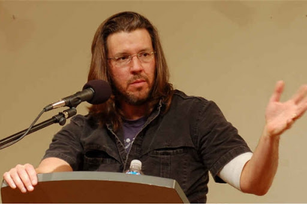
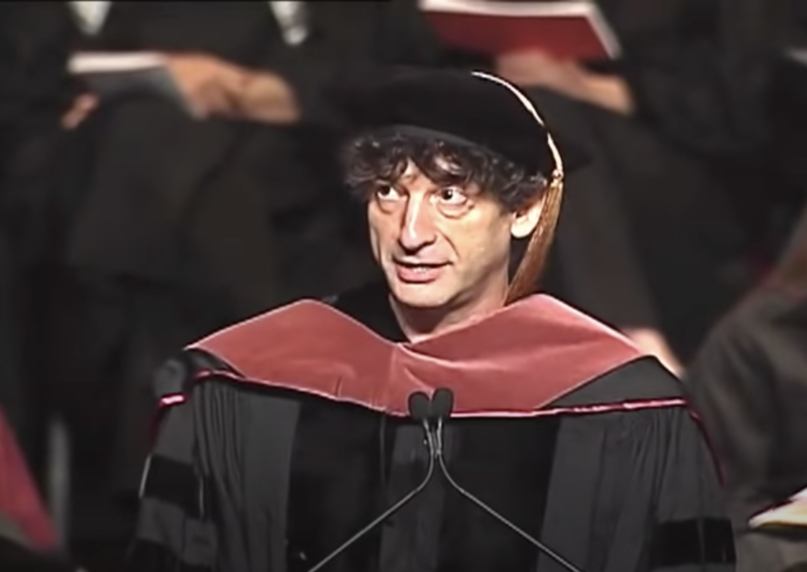
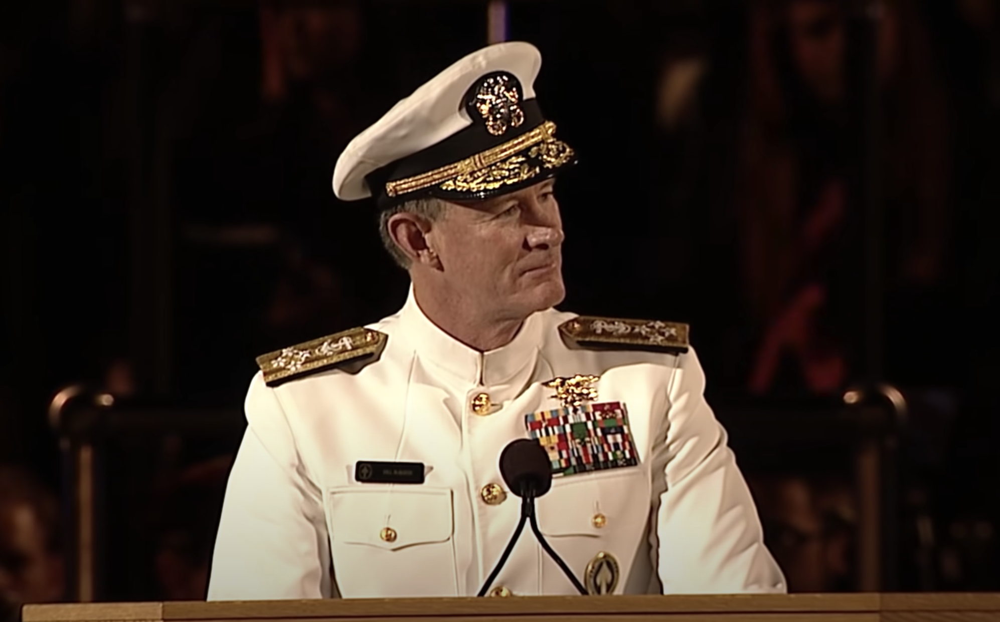

Here are links to some of my favorite commencement speeches, as well as notes for the three which have influenced me the most. Enjoy!

Delivered to the 2005 graduating class of Kenyon College
There are these two young fish swimming along and they happen to meet an older fish swimming the other way, who nods at them and says “Morning, boys. How’s the water?” And the two young fish swim on for a bit, and then eventually one of them looks over at the other and goes “What the hell is water?”
Notes:
The real value of a liberal arts education is not the familiar cliche of “teaching you how to think.” More subtly, its value instead lies in the option of what to think.
Wallace asks the audience to consider a hypothetical conversation between an atheist and a Christian. These two characters discuss the atheist’s miraculous near-death experience and of course both come away with two completely different interpretations. These two differing interpretations remind us that our beliefs shape the way derive meaning from experience.
It’s easy to let the analysis stop there. In doing so, however, we never consider how or why these men believe what they do.
Too often we similarly ignore our own ability to choose what we believe. More personally, Wallace considers how often his arrogance keeps him from reflecting on his beliefs, how often he lives entrenched in erroneous blind certainties.
Working the same tiring job, driving the same boring commute, day in and day out for years, many people slip into patterns of stress, anxiety, and anger. The loud annoying people in the supermarket are in my way. The slow, monotonous rush hour traffic becomes all about my fatigue and my need to get home. The experience of coming home from work is viewed through the unconscious, unacknowledged belief that in that moment everything is about myself.
But this is a choice. A choice which could instead lead me to consider that the people in the supermarket are suffering just as much as me. Maybe the person who cut me off in traffic is in an even greater and more valid hurry than myself, and just maybe, it’s possible that I’m actually the one in his way.
The insidious thing about self-centeredness and material desires is that these are the kinds of things you come to value gradually and unconsciously. Without even realizing it, you are increasingly selective about what you see and value and believe.
The antidote is reminding yourself “this is water, this is water,” exerting the necessary effort to stay conscious and aware through the tedium and difficulty of adult existence.

Delivered to the 2012 graduating class of the University of the Arts
I learned to write by writing. I tended to do anything as long as it felt like an adventure, and to stop when it felt like work, which meant that life did not feel like work.
Notes:
Gaiman didn't go to University. He felt the need to write and put himself out into the world.
He didn't have a career plan. Just a list of things he wanted to do: "to write an adult novel, a children's book, a comic, a movie, record an audiobook, write an episode of Doctor Who…"
Gaiman gives the graduating class several pieces of advice:
Finally, Gaiman concludes that if you don't know what you're doing, then pretend you are someone who is wise or competenet. Then just behave how that person would.

Delivered to the 2014 graduating class of the University of Texas at Austin
It's been almost 37 years to the day that I graduated from UT. I remember a lot of things about that day. I remember I had throbbing headache from a party the night before. I remember I had a serious girlfriend, whom I later married — that's important to remember by the way — and I remember that I was getting commissioned in the Navy that day.
Notes:
UT’s slogan is “What starts here changes the world.” McRaven points out that the effects of even small, simple decisions propagate across time and generations to have huge consequences. Indeed, this class of 8000 graduates has in their collective actions the potential to truly improve the world.
He draws upon his experience in Navy SEAL training, giving the graduating class some advice for their coming journeys: